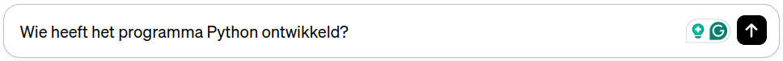
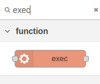
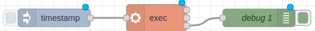
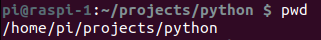
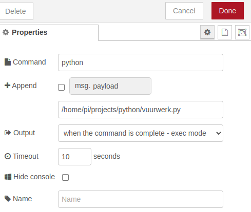

Je derde applicatie: Vuurpijl afschieten.
Met behulp van ChatGPT kan Python-code voor je worden gegenereerd. We laten zien hoe je een vuurpijl kunt simuleren op de Sense HAT..
Inhoud.
Wat je nodig hebt.
- Een Raspberry Pi 4 met het besturingssysteem Raspberry Pi OS.
- Een Sense-HAT aangesloten op de Raspberry Pi.
- SSH-verbinding met de Raspberry Pi.
Wat je gaat doen.
Stap 1: ChatGPT Python-software laten genereren.
Stap 2: Vervang de Python-code door die van de docent.
Stap 3: Python-code vanuit Node-RED aanroepen.
Stap 1: ChatGPT Python software laten genereren.
ChatGPT is een genertief AI (Artificial Intelligence = Kunstmatige Intelligentie) programma dat ook computer software kan genereren. Zie ook de inleiding, waar ChatGPT zelf uitlegt wat het kan doen voor jou.
Het blijkt dat het ook Python-code voor de Sense-HAT kan genereren. Je moet wel geregistreerd staan bij OpenAI.com om met ChatGPT te mogen werken. Momenteel is versie 3.5 nog gratis. Dit is de versie die we in de cursus gaan gebruiken. Je werkt vanuit een webbrowser.
| Stap | Actie |
|---|---|
| 1 | Open je browser. |
| 2 | Typ: https://openai.com/ in de adresbalk. |
| 3 | Klik rechtsboven op de toets: Try ChatGPT. $\\$ |
| 4 | Vermoedelijk wordt er gevraagd om in te loggen. Registreer jezelf eerst. |
| 5 | Klik linksboven in de linkerkolom op: New Chat. |
| 6 | Stel een vraag in het vakje onderaan in het midden, bijvoorbeeld: Wie heeft het programma Python ontwikkeld?$\\$ |
| 7 | Vermoedelijk krijg je het volgende antwoord: Python is ontwikkeld door Guido van Rossum en werd voor het eerst uitgebracht in 1991. Van Rossum is een Nederlands informaticus die Python ontwikkelde als een opvolger van de programmeertaal ABC. Hij leidde het project gedurende vele jaren en had een grote invloed op de ontwikkeling van Python. |
| 8 | Experimnteer verder, vraag bijvoorbeeld: Wat kun je doen met de sense-hat? |
In principe begin je met een eenvoudige vraag, die je steeds verder uitwerkt, bijvoorbeeld:
v1: Schrijf de Python-code voor een vuurpijl voor de Sense HAT.
Test vervolgens je code:
- Open een terminal op je laptop en type: ssh pi@192.168.2.15. Gebruik bij de CoderDojo het wachtwoord:
r7P94%B&. - Typ:
cd projects/python. - Typ:
nano vuurpijl.py. - Plak de code van ChatGPT in de editor met: Ctrl+Shift+V.
- Bewaar het bestand met: Ctrl+O.
- Verlaat de editor met: Ctrl+X.
- Typ:
python vuurpijl.py. - Stop de code met: Ctrl+C.
v2: Pas de code aan zodat de vuurpijl maar 1 keer wordt afgevuurd.
Test de code nogmaals:
- Typ:
nano vuurpijl.py. - Wis alle regels met: Ctrl+K.
- Plak de code van ChatGPT in de editor met: Ctrl+Shift+V.
- Bewaar het bestand met: Ctrl+O.
- Verlaat de editor met: Ctrl+X.
- Typ:
python vuurpijl.py.
v3. Pas de code aan zodat de explosie gedurende 15 seconden uit 30 willekeurige pixels bestaat.
Test de code nogmaals.
Enzovoort, totdat je tevreden bent.
Stap 2: Vervang de Python code door die van de docent.
Python-code van de docent, waar hij wel het nodige aan heeft moeten sleutelen:
from sense_hat import SenseHat
import time
import random
sense = SenseHat()
# Functie voor het weergeven van een vuurpijl op het LED-display met donkerblauwe achtergrond
def vuurpijl():
sense.clear(0, 0, 50) # Zet het hele display op donkerblauw als achtergrond
# Loop om de vuurpijl te simuleren
for i in range(8):
# Toon de vuurpijl die omhoog schiet
sense.set_pixel(3, 7 - i, (255, 255, 255)) # Witte lijn die omhoog gaat
time.sleep(0.1)
sense.clear(0, 0, 50) # Wis het display voor de explosie
# Simuleer explosie van de vuurpijl op een donkerblauwe achtergrond
for _ in range(100):
for _ in range(25):
x = random.randint(0, 7)
y = random.randint(0, 7)
kleur = (random.randint(100, 255), random.randint(0, 255), random.randint(100, 255)) # Pas de kleuren aan naar wens
sense.set_pixel(x, y, kleur)
time.sleep(0.05)
sense.clear(0, 0, 50) # Wis het display voor de volgende stap
# Roep de vuurpijl functie aan
vuurpijl()
sense.clear(1, 1, 1)Opdracht.
Vervang de Python code van vuurpijl.py door de code die staat aan het begin van deze paragraaf, Stap 2. Test de code.
Les 8.
In les 8 leer je hoe je de vuurpijl afschiet met behulp van de button-node (een toets waarop je kunt klikken die op je scherm staat van bijvoorbeeld je smartphone) uit de Dashboard module.
Stap 3 - Python code vanuit Node-RED aanroepen.
Natuurlijk is het handig als je vanuit Node-RED de Python code kunt gebruiken. Met de "exec"-node kun je programma's op de Raspberry Pi starten, zoals Python-scripts.
| Stap | Actie |
|---|---|
| 1 | Sleep daarop de volgende nodes naar je werkblad: inject, exec en debug naar je werkblad. Zoek naar de node exec met de zoek functie bovenin de linker kolom. Wis het zoeken door op het x te klikken.$\\$ |
| 2 | Verbind de nodes met elkaar. $\\$ |
| 3 | Dubbelklik op de exec-node en vul onder command in: python. $\\$ |
| 4 | Bepaal het absolute pad naar de folder project/python met het linux commando: pwd. $\\$ |
| 5 | Vul het absolute pad in in het veld "append", aangevuld met de naaam van het Python script vuurpijl.py, dus: /home/pi/projects/python/vuurpijl.py. $\\$ |
| 6 | Klik op het beginpunt van timestamp-node en de vuurpijl wordt afgeschoten. $\\$ |
Samenvatting.
Les 7 laat zien hoe je op een leuke manier kunt leren programmeren door een vuurpijl te simuleren op je Raspberry Pi met behulp van ChatGPT en Node-RED.
ChatGPT is een slim programma dat computer software kan maken, inclusief Python-code voor de Sense-HAT. Je moet geregistreerd zijn bij OpenAI.com om met ChatGPT te werken. Met behulp van ChatGPT kun je verschillende vragen stellen en zelfs code laten genereren, zoals een Python-script voor een vuurpijl. Nadat je de code hebt gegenereerd, kun je deze testen op je Raspberry Pi door via SSH verbinding te maken en de code uit te voeren.
In Node-RED kun je de Python-code gebruiken om de vuurpijl te simuleren op de Sense-HAT door de "exec"-node te gebruiken.S